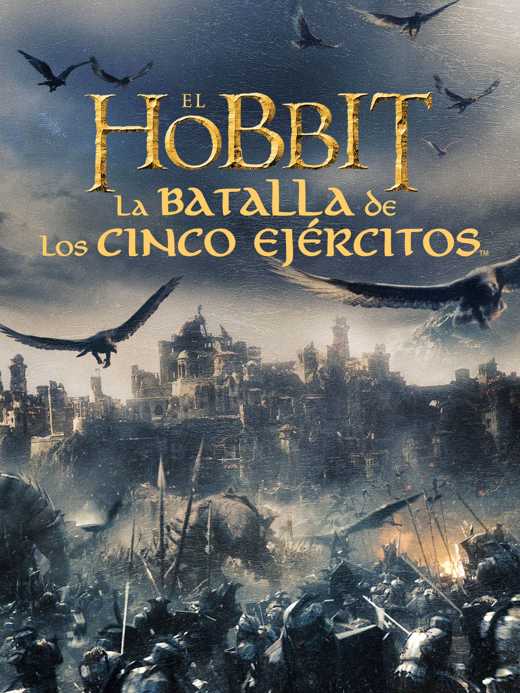

| titulo |
caratula |
sinopsis |
director |
actores |
| EL DICTADOR |
|
El almirante Haffaz Aladeen, dictador de Wadiya,
viaja a Estados Unidos, siguiendo el consejo de su tío Tamir,
con la intención de impedir el establecimiento de la democracia
en su país. |
Larry Charles |
Kevin Corrigan Slade
Olivia Taylor Dudley Nurse Svetlana
Sayed Badreya Omar
Adeel Akhtar Maroush
Rizwan Manji Patient
Aasif Mandvi Doctor
Danielle Burgio Virgin Guard
Fred Melamed Head of Rocket Science
Anthony Mangano Arresting Officer
Peter Conboy New York City Police Officer
Joanna Moskwa Russian Escort
Sylwia Wardaszka Russian Escort
Edward Norton Lui-même
Gad Elmaleh Lui-même
B.J. Novak
Jim Piddock |
| The Hobbit: The Battle of the Five Armies |
 |
Los enanos de Erebor han reclamado la riqueza de su patria,
pero ahora deben enfrentarse a las consecuencias de haber liberado al
temible dragón Smaug. Mientras Bilbo, Thorin y parte de la Compañía de
los Enanos se refugian en la Colina del Cuervo, Smaug ataca la Ciudad
del Lago, sembrando la muerte y la destrucción. |
Peter Jackson |
Cate Blanchett Galadriel
Ian Holm Old Bilbo
Christopher Lee Saruman
Hugo Weaving Elrond
Orlando Bloom Legolas
Manu Bennett Azog
Graham McTavish Dwalin
Aidan Turner Kili
Billy Connolly Dain
Stephen Fry Mayor of Laketown
Mikael Persbrandt Beorn
Bret McKenzie Lindir
Dean O'Gorman Fili
Sylvester McCoy Radagast the Brown
Ryan Gage Alfrid
Peter Hambleton Gloin
Adam Brown Ori
William Kircher Bifur
Lawrence Makoare Bolg
Jed Brophy Nori
Stephen Hunter Bombur
John Bell (II) Bain
Mark Hadlow Dori
John Callen (II) Oin
Chris Reilly Dwarf Lieutenant
Mark Mitchinson Braga
Robin Kerr Elros
Thomasin McKenzie Astrid
|
| bebe jefazo |
|
La llegada de un hermanito trastoca por completo la idílica
vida del pequeño Tim, hasta entonces hijo único de 7 años y el
ojito derecho de sus padres. Su nuevo hermano es un peculiar bebé que
viste traje y corbata y lleva maletín. Tim comienza a sospechar de
él hasta que descubre que puede hablar. |
Tom McGrath |
ViviAnn Yee Staci
Edie Mirman Big Boss Baby
Walt Dohrn Photographer
Nina Zoe Bakshi Tim's Daughter / Girl / Little Girl
Tom McGrath TV Chef
Chris Miller (LX) Captain Ross
Andrea Montana Knoll Flight Attendant
|
| TED |
|
John Bennett y su oso de peluche Ted han sido siempre inseparables,
pero su amistad se pondrá a prueba cuando Lori, la novia de John de
cuatro años, pida más de su relación. |
Seth MacFarlane |
Bill Smitrovich Frank
Patrick Stewart Le narrateur
Norah Jones Elle-même
Sam J. Jones Lui-même
Tom Skerritt Lui-même
Ralph Garman Le père de John
Alex Borstein La mère de John
John Viener Alix
Laura Vandervoort Tanya
Robert Wu Wan Ming
Ginger Gonzaga Gina
Jessica Stroup Tracy
Melissa Ordway Michelle
Chanty Sok Angelique
Pat Shea Client du restaurant
Paul Campbell Homme dans la file d'attente
Josh Duvendeck Homme n°1
Chris Cox Homme n°2
Henry Penzi Pote de Ted à la fête
Eric Weinstein Machiniste
Danny Smith Serveur
Mike Henry (II) Présentateur télé chrétien
Johnny Lee Davenport Mari
Ryan Reynolds |
| CREED |
 |
Adonis Johnson no llegó a conocer a su famoso padre, el campeón del mundo
de los pesos pesados, Apollo Creed. Sin embargo, la pasión por el boxeo
la lleva en la sangre y decide poner rumbo a Filadelfia. Una vez en la ciudad,
Adonis busca a Rocky y le pide que sea su entrenador. Con Rocky a su lado, ¿será
capaz de desarrollar no solo la fuerza sino también el corazón de un verdadero
boxeador para subirse al cuadrilátero? |
Ryan Coogler |
Mark Rhino Smith Conlan's Buddy
Hans Marrero Flores
Mauricio Ovalle Flores Trainer
Brian Anthony Wilson James
Jon Douglas Rainey Fight Promoter
Will Blagrove James
Juan Pablo Veizaga Nate
Robert Sale Leo Trainer #2
Max Kellerman Himself
Jim Lampley Himself
Hannah Storm Herself
Michael Buffer Himself
|